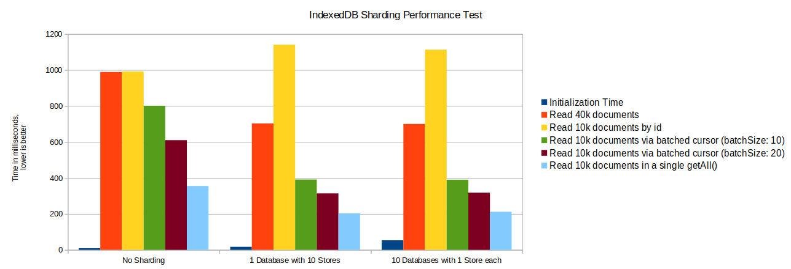

Why IndexedDB is slow and what to use instead
So you have a JavaScript web application that needs to store data at the client side, either to make it offline usable, just for caching purposes or for other reasons.
For in-browser data storage, you have some options:
- Cookies are sent with each HTTP request, so you cannot store more then a few strings in them.
- WebSQL is deprecated because it never was a real standard and turning it into a standard would have been too difficult.
- LocalStorage is a synchronous API over asynchronous IO-access. Storing and reading data can fully block the JavaScript process so you cannot use LocalStorage for more then few simple key-value pairs.
- The FileSystem API could be used to store plain binary files, but it is only supported in chrome for now.
- IndexedDB is an indexed key-object database. It can store json data and iterate over its indexes. It is widely supported and stable.
It becomes clear that the only way to go is IndexedDB. You start developing your app and everything goes fine. But as soon as your app gets bigger, more complex or just handles more data, you might notice something. IndexedDB is slow. Not slow like a database on a cheap server, even slower! Inserting a few hundred documents can take up several seconds. Time which can be critical for a fast page load. Even sending data over the internet to the backend can be faster then storing it inside of an IndexedDB database.
Transactions vs Throughput
So before we start complaining, lets analyze what exactly is slow. When you run tests on Nolans Browser Database Comparison you can see that inserting 1k documents into IndexedDB takes about 80 milliseconds, 0.08ms per document. This is not really slow. It is quite fast and it is very unlikely that you want to store that many document at the same time at the client side. But the key point here is that all these documents get written in a single transaction.
I forked the comparison tool here and changed it to use one transaction per document write. And there we have it. Inserting 1k documents with one transaction per write, takes about 2 seconds. Interestingly if we increase the document size to be 100x bigger, it still takes about the same time to store them. This makes clear that the limiting factor to IndexedDB performance is the transaction handling, not the data throughput.

To fix your IndexedDB performance problems you have to make sure to use as less data transfers/transactions as possible. Sometimes this is easy, as instead of iterating over a documents list and calling single inserts, with RxDB you could use the bulk methods to store many document at once. But most of the time is not so easy. Your user clicks around, data gets replicated from the backend, another browser tab writes data. All these things can happen at random time and you cannot crunch all that data in a single transaction.
Another solution is to just not care about performance at all. In a few releases the browser vendors will have optimized IndexedDB and everything is fast again. Well, IndexedDB was slow in 2013 and it is still slow today. If this trend continues, it will still be slow in a few years from now. Waiting is not an option. The chromium devs made a statement to focus on optimizing read performance, not write performance.
Switching to WebSQL (even if it is deprecated) is also not an option because, like the comparison tool shows, it has even slower transactions.
So you need a way to make IndexedDB faster. In the following I lay out some performance optimizations than can be made to have faster reads and writes in IndexedDB.
HINT: You can reproduce all performance tests in this repo. In all tests we work on a dataset of 40000 human documents with a random age between 1 and 100.
Batched Cursor
With IndexedDB 2.0, new methods were introduced which can be utilized to improve performance. With the getAll() method, a faster alternative to the old openCursor() can be created which improves performance when reading data from the IndexedDB store.
Lets say we want to query all user documents that have an age greater then 25 out of the store.
To implement a fast batched cursor that only needs calls to getAll() and not to getAllKeys(), we first need to create an age index that contains the primary id as last field.
myIndexedDBObjectStore.createIndex(
'age-index',
[
'age',
'id'
]
);
This is required because the age field is not unique, and we need a way to checkpoint the last returned batch so we can continue from there in the next call to getAll().
const maxAge = 25;
let result = [];
const tx: IDBTransaction = db.transaction([storeName], 'readonly', TRANSACTION_SETTINGS);
const store = tx.objectStore(storeName);
const index = store.index('age-index');
let lastDoc;
let done = false;
/**
* Run the batched cursor until all results are retrieved
* or the end of the index is reached.
*/
while (done === false) {
await new Promise((res, rej) => {
const range = IDBKeyRange.bound(
/**
* If we have a previous document as checkpoint,
* we have to continue from it's age and id values.
*/
[
lastDoc ? lastDoc.age : -Infinity,
lastDoc ? lastDoc.id : -Infinity,
],
[
maxAge + 0.00000001,
String.fromCharCode(65535)
],
true,
false
);
const openCursorRequest = index.getAll(range, batchSize);
openCursorRequest.onerror = err => rej(err);
openCursorRequest.onsuccess = e => {
const subResult: TestDocument[] = e.target.result;
lastDoc = lastOfArray(subResult);
if (subResult.length === 0) {
done = true;
} else {
result = result.concat(subResult);
}
res();
};
});
}
console.dir(result);

As the performance test results show, using a batched cursor can give a huge improvement. Interestingly choosing a high batch size is important. When you known that all results of a given IDBKeyRange are needed, you should not set a batch size at all and just directly query all documents via getAll().
RxDB uses batched cursors in the IndexedDB RxStorage.
IndexedDB Sharding
Sharding is a technique, normally used in server side databases, where the database is partitioned horizontally. Instead of storing all documents at one table/collection, the documents are split into so called shards and each shard is stored on one table/collection. This is done in server side architectures to spread the load between multiple physical servers which increases scalability.
When you use IndexedDB in a browser, there is of course no way to split the load between the client and other servers. But you can still benefit from sharding. Partitioning the documents horizontally into multiple IndexedDB stores, has shown to have a big performance improvement in write- and read operations while only increasing initial pageload slightly.

As shown in the performance test results, sharding should always be done by IDBObjectStore and not by database. Running a batched cursor over the whole dataset with 10 store shards in parallel is about 28% faster then running it over a single store. Initialization time increases minimal from 9 to 17 milliseconds.
Getting a quarter of the dataset by batched iterating over an index, is even 43% faster with sharding then when a single store is queried.
As downside, getting 10k documents by their id is slower when it has to run over the shards. Also it can be much effort to recombined the results from the different shards into the required query result. When a query without a limit is done, the sharding method might cause a data load huge overhead.
Sharding can be used with RxDB with the Sharding Plugin.
Custom Indexes
Indexes improve the query performance of IndexedDB significant. Instead of fetching all data from the storage when you search for a subset of it, you can iterate over the index and stop iterating when all relevant data has been found.
For example to query for all user documents that have an age greater than 25, you would create an age+id index.
To be able to run a batched cursor over the index, we always need our primary key (id) as the last index field.
Instead of doing this, you can use a custom index which can improve the performance. The custom index runs over a helper field ageIdCustomIndex which is added to each document on write. Our index now only contains a single string field instead of two (age-number and id-string).
// On document insert add the ageIdCustomIndex field.
const idMaxLength = 20; // must be known to craft a custom index
docData.ageIdCustomIndex = docData.age + docData.id.padStart(idMaxLength, ' ');
store.put(docData);
// ...
// normal index
myIndexedDBObjectStore.createIndex(
'age-index',
[
'age',
'id'
]
);
// custom index
myIndexedDBObjectStore.createIndex(
'age-index-custom',
[
'ageIdCustomIndex'
]
);
To iterate over the index, you also use a custom crafted keyrange, depending on the last batched cursor checkpoint. Therefore the maxLength of id must be known.
// keyrange for normal index
const range = IDBKeyRange.bound(
[25, ''],
[Infinity, Infinity],
true,
false
);
// keyrange for custom index
const range = IDBKeyRange.bound(
// combine both values to a single string
25 + ''.padStart(idMaxLength, ' '),
Infinity,
true,
false
);

As shown, using a custom index can further improve the performance of running a batched cursor by about 10%.
Another big benefit of using custom indexes, is that you can also encode boolean values in them, which cannot be done with normal IndexedDB indexes.
RxDB uses custom indexes in the IndexedDB RxStorage.
Relaxed durability
Chromium based browsers allow to set durability to relaxed when creating an IndexedDB transaction. Which runs the transaction in a less secure durability mode, which can improve the performance.
The user agent may consider that the transaction has successfully committed as soon as all outstanding changes have been written to the operating system, without subsequent verification.
As shown here, using the relaxed durability mode can improve performance slightly. The best performance improvement could be measured when many small transactions have to be run. Less, bigger transaction do not benefit that much.
Explicit transaction commits
By explicitly committing a transaction, another slight performance improvement can be achieved. Instead of waiting for the browser to commit an open transaction, we call the commit() method to explicitly close it.
// .commit() is not available on all browsers, so first check if it exists.
if (transaction.commit) {
transaction.commit()
}
The improvement of this technique is minimal, but observable as these tests show.
In-Memory on top of IndexedDB
To prevent transaction handling and to fix the performance problems, we need to stop using IndexedDB as a database. Instead all data is loaded into the memory on the initial page load. Here all reads and writes happen in memory which is about 100x faster. Only some time after a write occurred, the memory state is persisted into IndexedDB with a single write transaction. In this scenario IndexedDB is used as a filesystem, not as a database.
There are some libraries that already do that:
- LokiJS with the IndexedDB Adapter
- Absurd-SQL
- SQL.js with the empscripten Filesystem API
- DuckDB Wasm
In-Memory: Persistence
One downside of not directly using IndexedDB, is that your data is not persistent all the time. And when the JavaScript process exists without having persisted to IndexedDB, data can be lost. To prevent this from happening, we have to ensure that the in-memory state is written down to the disc. One point is make persisting as fast as possible. LokiJS for example has the incremental-indexeddb-adapter which only saves new writes to the disc instead of persisting the whole state. Another point is to run the persisting at the correct point in time. For example the RxDB LokiJS storage persists in the following situations:
- When the database is idle and no write or query is running. In that time we can persist the state if any new writes appeared before.
- When the
windowfires the beforeunload event we can assume that the JavaScript process is exited any moment and we have to persist the state. Afterbeforeunloadthere are several seconds time which are sufficient to store all new changes. This has shown to work quite reliable.
The only missing event that can happen is when the browser exists unexpectedly like when it crashes or when the power of the computer is shut of.
In-Memory: Multi Tab Support
One big difference between a web application and a 'normal' app, is that your users can use the app in multiple browser tabs at the same time. But when you have all database state in memory and only periodically write it to disc, multiple browser tabs could overwrite each other and you would loose data. This might not be a problem when you rely on a client-server replication, because the lost data might already be replicated with the backend and therefore with the other tabs. But this would not work when the client is offline.
The ideal way to solve that problem, is to use a SharedWorker. A SharedWorker is like a WebWorker that runs its own JavaScript process only that the SharedWorker is shared between multiple contexts. You could create the database in the SharedWorker and then all browser tabs could request the Worker for data instead of having their own database. But unfortunately the SharedWorker API does not work in all browsers. Safari dropped its support and InternetExplorer or Android Chrome, never adopted it. Also it cannot be polyfilled. UPDATE: Apple added SharedWorkers back in Safari 142
Instead, we could use the BroadcastChannel API to communicate between tabs and then apply a leader election between them. The leader election ensures that, no matter how many tabs are open, always one tab is the Leader.

The disadvantage is that the leader election process takes some time on the initial page load (about 150 milliseconds). Also the leader election can break when a JavaScript process is fully blocked for a longer time. When this happens, a good way is to just reload the browser tab to restart the election process.
Using a leader election is implemented in the RxDB LokiJS Storage.